An Event is Worth One Token: Event Tokenization for Industrial-scale LLM Recommendation / 一个事件值一个 Token：面向工业级大模型推荐的事件分词
这篇工作由 AI at Meta 的 Fan Xia 等 15 位作者完成，于 2026 年 8 月 26 日提交至 arXiv，提出 AMBER（Autoregressive Modeling via Bottlenecked Event Representation）。它把用户一次互动时的异构时间快照压缩成连续 Event Token，再让自回归序列模型消费这些 token。论文入口：arXiv:2608.25546。本轮未核验到独立的官方 AMBER 代码或项目仓库，实验数据也是非公开的 Meta 工业日志。
现有 LLM 推荐的每个序列位置往往只编码文本、Semantic ID 或少量类别特征，大量用户、物品、上下文和结果信号在事件级被丢失；而自回归建模又会让这种低分辨率表示成为后续预测的上下文，导致信息损失沿序列逐步累积。
1. 背景和问题
论文先把推荐从“物品 ID 序列”抽象到 Large Event Model（LEM）：只要任务是从结构化的真实事件序列预测未来状态，就不应把每个位置当成一个单纯词元。推荐事件发生时，系统实际看到的是一份时间快照：用户当前状态、候选物品的多类属性、展示位置与权重、用户-物品交叉信号，以及点击或深层行为等结果。作者用 snapshot resolution（快照分辨率）表示“每个事件中有多少不同信号被模型编码”。这个维度与模型参数量、序列长度并列，因为再大的模型也不能恢复输入中已经被删除的状态。
工业推荐里的根本难点是，快照分辨率和历史覆盖长度共同占用服务资源。传统点式排序器保留当前请求的高分辨率特征，但历史事件只有稀疏的物品或行为表示；每来一次 impression，还会重复编码历史，训练效率很差。自回归推荐通过一次因果前向处理整条序列，避免了重复历史计算，却常把每个位置缩成 Semantic ID、文本或手工特征子集。前者的查询丰富而历史贫瘠，后者的历史足够长却每步查询很弱；两者分别丢掉“持续的高分辨率历史”和“单次因果序列训练”。
这种信息缺口在自回归模型中会累积。一个事件位置不仅要输出本次预测，还要作为下一个位置的 key/value 上下文。如果查询中缺了位置、权重、用户状态和 outcome，当次预测会受损；如果它存入历史的表示也只有物品 ID，后续所有位置都无法判断“用户在什么情境下对这个物品做了什么”。AMBER 的问题意识因此不是简单地向每个事件塞更多 token，而是在固定窗口下把事件快照压缩成信息密度更高的单个连续 token。
另一层挑战来自工程成本而非 Transformer 本身。大规模排序中，特征的存储、网络传输、反序列化和物化成本可以接近乃至超过 GPU 计算。若在每次请求路径上重新读取数百个特征乘以数百个历史事件，高分辨率序列在线上就不可行。因此论文的解法同时包含表示学习与计算时机调度：训练时用更多离线算力学习高密度表示，事件发生时异步生成并缓存，在线请求只消费固定尺寸的 Event Token。这是一个“用存储和版本治理换实时计算”的系统选择，不是免费的性能提升。
与既有 LLM 推荐表示相比，AMBER 不把“一事件一 token”理解成一个额外的物品编码约束。文本序列能表达语义，但在固定 context window 下信息密度低，同一事件的多个文本 token 会挤掉更早历史；Semantic ID 非常紧凑，却主要编码物品身份，无法自然承载一次展示的用户状态、位置、权重和 outcome。HLLM 一类层次模型将物品文本压成嵌入，但关注点仍是 item-centric；LoopFM 一类方法复用中间基础模型表示，但下游梯度不穿过离线蒸馏边界。AMBER 则把完整事件作为压缩单元，且让排序或召回损失直接决定什么信息应保留在连续 token 里。所以它要验证的不是“连续 token 是否能被 Transformer 读取”这个已被多模态模型部分回答的问题，而是“事件级连续 token 能否同时改善质量、历史覆盖和工业服务成本”。
快照分辨率还会同时作用于 attention 的两侧。当前事件的高分辨率表示使 query 能区分“同一用户为何在这个时点看到这个候选”；过去事件的高分辨率表示使 key/value 保留“当时什么情境与结果造成了这次互动”。如果只给当前 query 全特征，模型仍只能在低分辨率历史中寻找证据；如果历史事件用多 token 拆开表达，固定窗口又会减少可见事件数。因此 AMBER 的三个实验问题紧密相连：全事件特征是否优于 item-only 历史，一 token 的历史覆盖是否优于每事件多 token，以及异步缓存能否把前两者的质量收益带到可接受的总计算区间。
2. 方法
2.1 事件中心的 AMBER 架构
AMBER 由 Event Tokenizer $g_\theta$ 和下游 User LLM $f_\psi$ 组成。对事件 $e_i$，tokenizer 先分类处理原始特征：稀疏类别特征做 embedding lookup，现成嵌入向量做线性投影，密集数值特征归一化、拼接后再投影，得到 $m$ 个 $d_{\mathrm{model}}$ 维特征 token。随后追加 $c$ 个可学习 CLS token，让 $L$ 层双向 Transformer 完成跨特征交互与汇总，最后用 MLP 把 CLS 输出映射到 LLM 连续嵌入空间。关键不是把一组手工特征拼成更长的 token 序列，而是先在事件内交互、再压缩成少量高密度连续 token。
式（1）写出这个三步编码器：
为了不给排序上下文、排序标签、召回历史和召回目标各训一个编码器，AMBER 用式（2）中的角色遮罩 $m$ 控制可见特征：
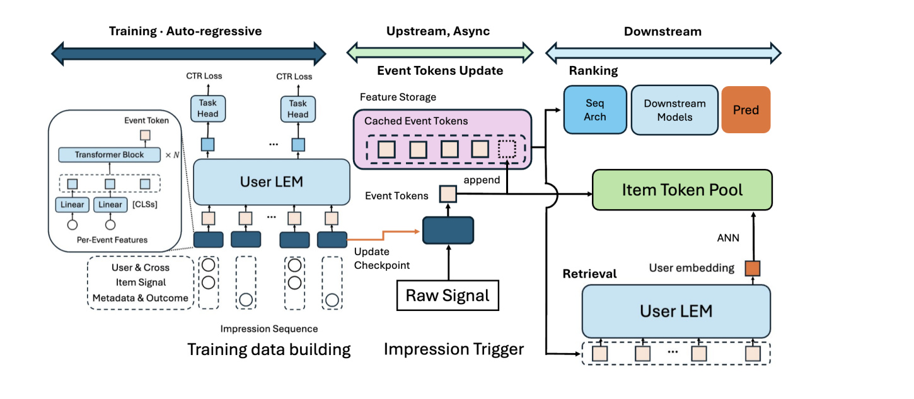
Figure 2 要从时间与数据所有权两个方向读。左侧是训练数据构建：Event Tokenizer 对每次 impression 的原始异构特征编码，User LLM 沿交互序列因果建模，CTR 损失或召回损失将梯度一直传回 tokenizer。中间的 upstream 不在用户发起下一次排序请求时计算，而是 impression 一发生就读取完整特征，产生 token 并追加到用户序列，物品 token 池也单独更新。右侧展示同一批缓存表示的两个去向：排序可以先作为非 LLM 模型的历史特征，召回则让 User LLM 产生 ANN 查询向量。这张图证明 AMBER 的“一个事件一个 token”是端到端学习与异步物化的组合，如果只复现 tokenizer 而没有缓存更新、版本管理和下游接口，就没有复现它的主要系统贡献。
2.2 三阶段训练与排序/召回序列设计
直接把随机初始化的 tokenizer 接到预训练 Llama 并联合训练，会用大幅漂移的连续输入破坏原有嵌入空间。作者因此先冻结 User LLM，只训 Event Tokenizer 做 pre-alignment；再解冻两者进行联合训练；部署后周期性重训，跟踪开放词表和用户趋势。这三阶段分别解决初始空间对齐、任务共适应和长期非平稳性。
排序为每个事件交错放置 context token $z_i^{(A)}$ 和 label token $z_i^{(B)}$，对应式（3）：
召回更强调历史覆盖，因此每个事件只生成一个未遮罩的 token，式（5）是
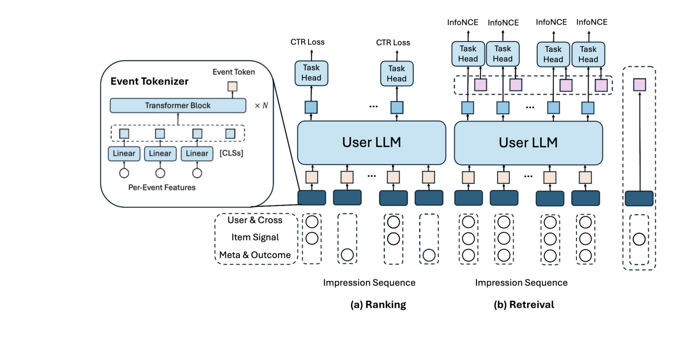
Figure 3 将两种任务的信号流并列起来。左半的 ranking 在每次 impression 下放两个不同遮罩的 token：浅色 context 携带当前预测所需的高分辨率特征，深色 label 把已发生的 outcome 留给后续历史；顶部 CTR loss 只接在 context 位置，对应式（4），因果遮罩保证它不能偷看同步标签。右半的 retrieval 把全量事件信号压成单 token，每个历史位置都可产生用户向量，再与独立物品 token 按式（6）做对比学习。图中左侧的 tokenizer 参数一直共享，差别只来自虚线特征组的角色遮罩。因此 AMBER 并非为排序与召回分别造两套编码器，而是用相同事件语言承载两种序列任务；复现时必须核对每种角色的可见特征与 attention mask，否则很容易把泄漏当作精度改善。
2.3 异步上游与下游消费
训练时，离线管道只处理实际日志行为与采样负例，且没有严格延迟限制；服务时，排序必须对每个请求的大量候选打分。AMBER 故意多用离线算力：事件发生后，异步 tokenizer 通过现有训练数据管道查询完整特征，将结果追加到 feature store 中的用户序列。后续每次请求都只读取缓存 token，不再对同一历史事件反复物化数百个原始特征。这种定时改写了式（10）的总计算分解：
附录用式（11）进一步估算排序的用户侧工作量：
特征物化成本用式（12）做一阶估算：
2.4 循环对齐与嵌入压缩
缓存连续 token 会引入离散 ID 没有的版本兼容问题：日更 tokenizer $g_{\theta_{\mathrm{new}}}$ 与旧版 $g_{\theta_{\mathrm{old}}}$ 可能把同一事件映射到不同空间，使新 token 和用户历史中的旧 token 不再可比。AMBER 用式（7）训练判别器 $D_\phi$ 识别 token 来自新还是旧 checkpoint，同时通过梯度反转让新编码器欺骗它：
存储侧先用 Matryoshka Dropout 在单次前向中学习有序维度。式（8）以概率 $\rho$ 从 $[d_{\min},d_z]$ 均匀采样保留长度 $d_r$，截断向量后做尺度补偿：
3. 实验结果
3.1 数据、指标与对照口径
论文在大规模工业推荐平台的 PB 级 impression 日志上训练，按时间切分过去训练、近期特征选择和未来评估。每个事件从用户、物品、上下文和 outcome 中保留数百个重要特征；特征消融和架构选择用 10% 子样本，主结果用全量数据。作者认为公开推荐数据同时缺少数百异构特征与十亿级时序非平稳性，因此没有给出公开 benchmark。这个理由与业务问题匹配，但也意味着读者无法核对样本规模、正负例分布、特征生产时延和全部训练超参。
排序主指标是 Normalized Entropy（NE），式（9）把平均对数损失除以经验正例率的熵：
对照组包括：与 AMBER 匹配特征、FLOP 预算和训练目标的 Incumbent（fair）；只在序列头提供用户特征、每事件只留物品类别信号的 HSTU-style 输入；融合 Semantic ID 和 content-understanding embedding 的单 token 上界；以及在同一 User LLM 内模拟点式信息流的 Pointwise。最后一个对照保持自回归单次前向，当前 query 用全特征，持久历史严格限定为 item-only，从而将“自回归训练效率”与“历史全程高分辨率”拆开。
3.2 排序与召回主结果
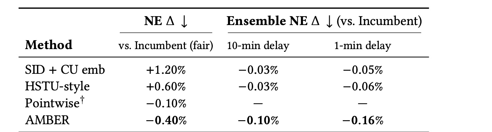
Table 2 中的数值都要按“越低越好”读。AMBER 相对 Incumbent（fair）的 NE $\Delta$ 为 $-0.40\%$；Pointwise 为 $-0.10\%$，因此在相同自回归骨干和训练效率下，把高分辨率信息保留到整条历史还带来 $0.30$ 个百分点差距。HSTU-style 和 SID+CU embedding 分别比 fair baseline 差 $0.60\%$ 和 $1.20\%$，AMBER 对它们的相对优势是 $1.00$ 与 $1.60$ 个百分点，说明用户、上下文和 outcome 不只是可以由更大 User LLM 补回的信息。与 Incumbent 融合时，AMBER 在 10 分钟和 1 分钟特征延迟窗口下给出 $-0.10\%$ 和 $-0.16\%$ Ensemble NE，SID+CU 只有 $-0.03\%$ 和 $-0.05\%$。这支持 Event Token 带来存量排序器未覆盖的信号，但它仍是离线模拟融合而不是一个完整的端到端 LLM 在线排序实验。
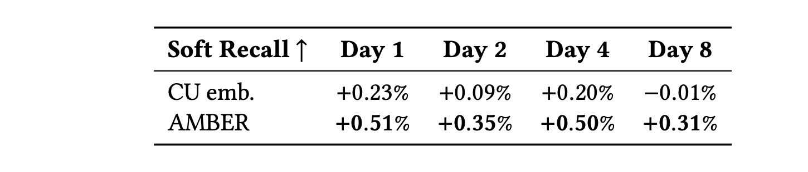
Table 3 关心的不只是 Day 1 最新 checkpoint，而是连续 token 在模型变旧后还能否保留价值。AMBER 从 Day 1 到 Day 8 的 Soft Recall $\Delta$ 依次是 $+0.51\%$、$+0.35\%$、$+0.50\%$ 和 $+0.31\%$；CU embedding 对照依次是 $+0.23\%$、$+0.09\%$、$+0.20\%$ 和 $-0.01\%$。两条曲线都不单调，所以不能把 Day 4 回升解释为普遍的抗衰减规律；更稳妥的结论是，四个被报告的 checkpoint age 上，AMBER 始终比 CU 高 $0.28$ 至 $0.32$ 个百分点，而 Day 8 仍为正增益。这与排序结果共同支持“快照分辨率提供了物品内容嵌入没有的信号”。但 Soft Recall 是经存量候选合并和下游 ranker 重打分后的价值加权指标，不是公开语料上的标准 Recall@K，两者数值不可直接比较。
3.3 特征与分词器设计消融
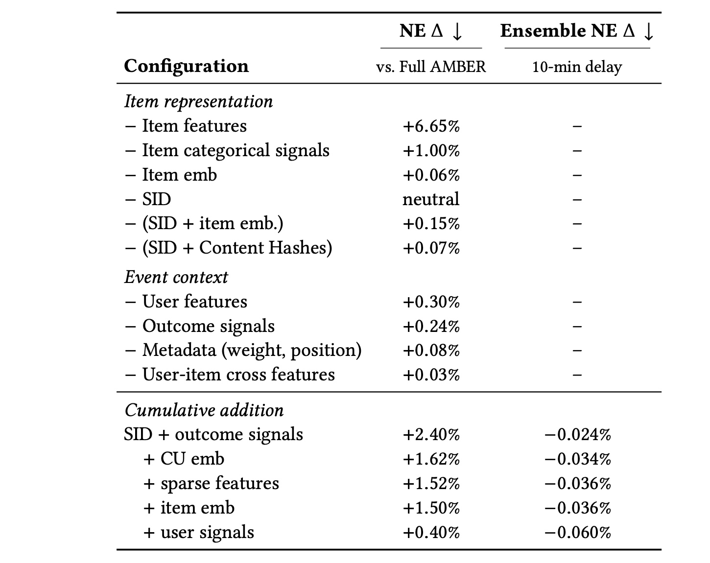
Table 4 用两种方向避免把高维特征的价值归因给某一组巧合。留一删除时，去掉所有 item features 使 NE 恶化 $6.65\%$，证明物品表示仍是序列推荐的主信号；但只去掉 SID 是 neutral，去掉 item embedding 只损失 $0.06\%$，两者同时去掉才损失 $0.15\%$，说明它们之间有大量重叠。相反，去掉 user features 和 outcome signals 分别恶化 $0.30\%$ 与 $0.24\%$，metadata 也有 $0.08\%$，这些信号并不存在于纯物品行为序列中。反向累计加入时，SID+outcome 与完整 AMBER 差 $2.40\%$，加 CU embedding 后缩至 $1.62\%$，加稀疏特征和 item embedding 只逐步到 $1.50\%$，最后加用户信号才跳到 $0.40\%$。因此“快照分辨率”不是单纯扩充物品 ID，它最有价值的部分恭是用户时点状态与已发生结果。
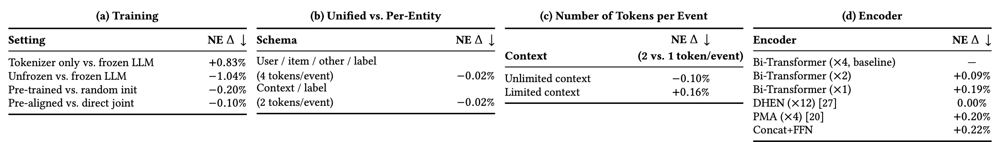
Table 5 的四个原始子表把架构选择逐层拆开。子表（a）中，只有 tokenizer 相比冻结 LLM 差 $0.83\%$，说明即使 LLM 不更新，它的预训练参数也能消费 Event Token；解冻后再得 $-1.04\%$，预训练初始化相比随机初始化稳定保留 $-0.20\%$，预对齐相比直接联合训练还有 $-0.10\%$。子表（b）中，共享 tokenizer 在四 token 和两 token schema 下都比按实体分开训练好 $0.02\%$，但这个幅度很小，论文正文也限定在足够容量时才出现正迁移。子表（c）最关键：无限上下文时每事件两 token 改善 $0.10\%$，有限窗口时却恶化 $0.16\%$，直接支持“历史覆盖优先”。子表（d）显示四层双向 Transformer 与 12 层 DHEN 质量持平，两层、一层、PMA 和 Concat+FFN 分别恶化 $0.09\%$、$0.19\%$、$0.20\%$ 和 $0.22\%$；选 Transformer 不是因为唯一可行，而是它在特征交互、FlashAttention 和工程灵活性之间更均衡。
3.4 总计算成本下的扩展律
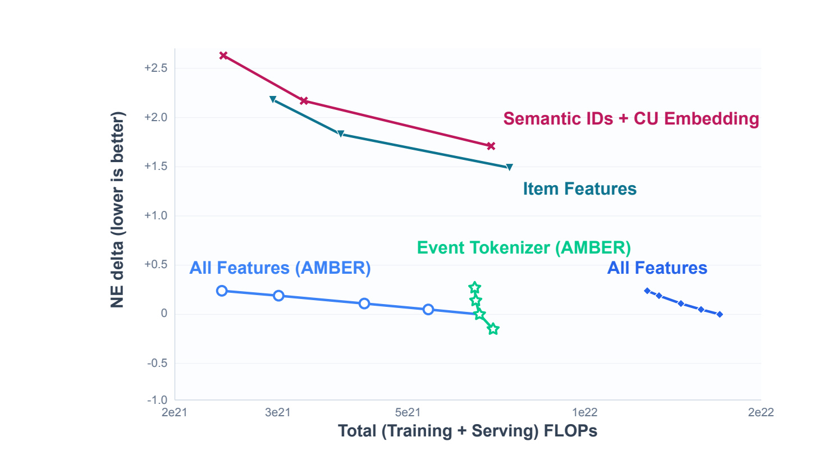
Figure 1 的横轴不是单次训练 FLOPs，而是训练、重复服务与 CPU 特征物化共同折算的总成本；纵轴是相对 NE $\Delta$，越低越好。红色 Semantic ID+CU embedding 和蓝绿色 item features 随计算增长都有改善，但曲线整体高于绿色的 Event Tokenizer 扩展和浅蓝色 All Features（AMBER）。右下的黑蓝短线显示，如果不做 AMBER 异步缓存，全特征虽有更好 NE，横轴会被重复物化推到约 $10^{22}$ FLOPs 量级；缓存后，浅蓝线在更低成本处达到类似或更优质量。这张图支持的精确主张是“快照分辨率可以成为扩展轴，而异步物化能改变它的总成本位置”，不是“特征永远比模型参数更值得投资”；后者仍取决于流量倍数、特征栈单价和缓存寿命。
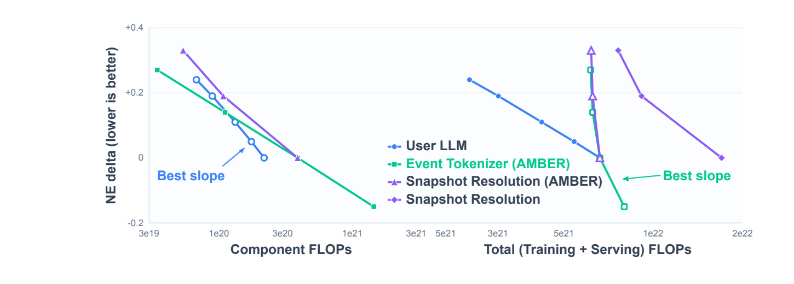
Figure 5 把上述口径差异变成对照实验。左图只看 component FLOPs 时，User LLM 的紫线有最好斜率，这与常见 scaling law 判断一致：在输入固定时，扩大下游模型带来最快质量改善。右图把训练与服务总 FLOPs 放到横轴后，User LLM 每次请求都运行，紫线被向右拉长；Event Tokenizer 和 AMBER 快照分辨率的绿线因为每事件只计算一次并缓存，反而得到更优总成本斜率。图中左右两组结论并不矛盾，它们回答的是两个问题：“再多一份训练算力给谁”与“整个产品周期再多一份总成本给谁”。论文的工程价值就在于要求 scaling 实验报告后一种口径，但其服务 FLOPs 和物化系数是估算值，不是对外可审计的绝对延迟或成本。
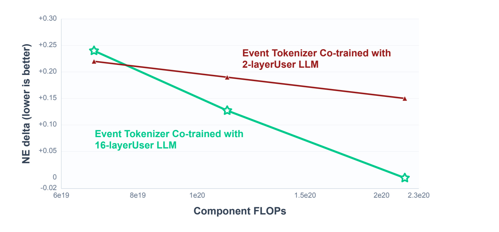
Figure 6 固定未来数据上的 Event Token，再单独扩大新的下游 User LLM，目的是检查“token 本身的质量是否成为下游 scaling 上限”。红线的 token 来自与 2 层 User LLM 共训的 tokenizer，绿线来自与 16 层 User LLM 共训的 tokenizer；随下游 component FLOPs 增加，两条线都改善，但绿线下降明显更快，到最大计算点接近 $0$ 附近，而红线仍约在 $+0.15$。这说明更大下游模型不会自动修复低质量 token，反而需要更强共训模型促使 tokenizer 保留可被大模型利用的细粒度信息。工程上，这意味着 tokenizer 版本不只是一个固定预处理器；当下游容量升级时，需要重新评估共训容量、缓存重算与旧 token 兼容成本。
3.5 表示漂移、压缩与跨架构验证
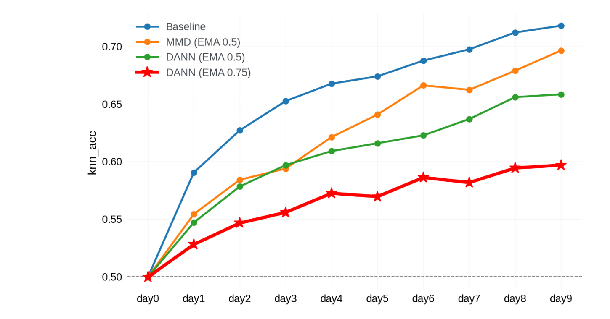
Figure 4 用 k-NN 分类器区分新旧 checkpoint 产生的 token，$0.5$ 表示两个分布近似不可分，数值越高表示漂移越严重。蓝色 baseline 从 day 0 的 $0.5$ 持续上升，day 9 超过 $0.71$，显示循环训练会将微小的每日空间变化累积成可被非线性分类器识别的版本差。橙色 EMA(0.5)+MMD 有改善但 day 9 仍接近 $0.70$，绿色 EMA(0.5)+DANN 约为 $0.66$，红色 EMA(0.75)+DANN 约为 $0.60$。图中所谓“稳定”不等于完全无漂移；最优曲线仍明显高于 $0.5$，只是漂移速度被压低。对缓存系统而言，这张图说明对齐不能取代 token TTL、版本标记和分批回填，它更像降低混用时的快速失配风险。
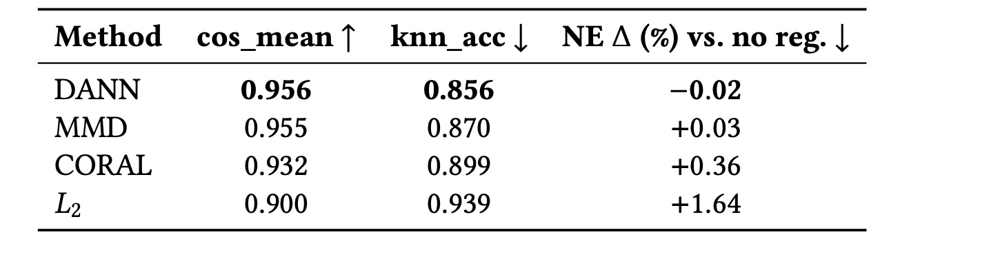
Table 6 用三个相互制衡的指标评估对齐：同一事件在新旧编码器下的平均余弦相似度越高越好，k-NN checkpoint 准确率越低越好，相对无正则的 NE $\Delta$ 越低越好。DANN 的 $\mathrm{cos\_mean}=0.956$、$\mathrm{knn\_acc}=0.856$，同时 NE 还改善 $0.02\%$，是唯一在三个口径上都不交换主任务质量的方法。MMD 的余弦相似度几乎相同，但 k-NN 略高且 NE 恶化 $0.03\%$；CORAL 和 $L_2$ 的对齐更差，NE 分别恶化 $0.36\%$ 和 $1.64\%$。这提醒读者不能只优化与目标相同的余弦相似度：简单拉近新旧向量可能抹掉对预测有用的时变信号，而 DANN 用独立非线性可分性目标寻找更有弹性的空间约束。不过这仍只是一个 20 天间隔上的内部实验，对突发业务迁移或更长缓存寿命的外推未验证。
压缩部分报告 INT4 服务相对 FP32 减少 8 倍存储，保留约 80% 全精度 Event Token 的增益；论文没有给出独立压缩表，因此无法从公开材料追溯不同维度、精度与业务指标的完整曲线。更接近部署的跨架构验证使用一个约 384 万密集参数、约 200GB 稀疏 embedding table 的 tokenizer，在 Facebook 某全流量 surface 每天编码数十亿事件，将 Event Token 作为历史特征接入已高度优化的非 LLM Incumbent，报告 $-0.06\%$ NE；作者按内部标准认为 $0.02\%$ 已具统计显著和可测收入影响。这一结果证明 token 可跨架构传递信号，却不能被误读为端到端 User LLM 已在实时排序路径全面部署；论文明确把长历史 KV cache 等端到端排序瓶颈留在范围之外。
4. 总结
4.1 我的判断与迁移启发
AMBER 最有价值的贡献不是“又一个更大的序列模型”，而是把推荐 scaling 的输入维度与服务会计口径连在一起。它证明，当模型已经可以扩大时，每个事件保留什么信息会决定下游扩展是否还有用；当高分辨率特征太贵时，通过事件触发的异步计算和缓存复用，可以把成本从“每次请求乘历史长度”改写为“每事件一次”。对推荐工程，这提示应把历史特征存储、消息触发、tokenizer 版本、下游特征消费和整体算力曲线作为一个设计单元，而不是只在离线指标上比 Transformer 层数。对大模型，Event Token 提供一种个性化连续模态：用户行为可以和文本共同进入 LLM 嵌入空间，用于个性化 RAG、Agent 记忆或跨任务用户表示。但这个方向在本文中仍是 future work，不是已有多任务实验结论。
4.2 局限与后续跟进
局限一，数据、特征 schema、模型训练配置与代码没有对外公开，PB 级日志与公开 benchmark 之间的差异使核心数值难以独立复现。局限二，总计算横轴依赖 30–100 倍的排序服务/训练工作量范围和基础设施特定的特征物化系数，这些坐标不可直接搬到其他平台。局限三，缓存 Event Token 把计算问题转化为存储、更新延迟、版本混用和回填问题，DANN+EMA 不能消除长周期漂移。局限四，共享 tokenizer 的正迁移只在足够容量下成立，消融幅度只有 $0.02\%$，小模型或特征差异更大的任务可能会负迁移。局限五，大流量结果是把 token 接入非 LLM ranker，端到端 User LLM 排序的 KV cache、延迟和容错并未解决。
后续可以做四组有判别力的验证。第一，在公开的异构事件数据上复现一个小型完整链路，同时记录 token 生成、存储、网络、特征物化和下游推理成本，检查 Pareto 前沿是否在不同成本口径下仍稳定。第二，把渐进分布变化与突发事件分开，评估新旧 tokenizer 混用、token TTL、回填速度和主指标波动，才能确定 DANN 的安全迁移窗口。第三，联合扫描快照特征数、历史长度、每事件 token 数、向量维度和量化精度，而不是一次只改一轴，用以寻找真正的记忆-质量-延迟曲面。第四，将 Event Token 与文本、Semantic ID 和长期个性化记忆混合，比较推荐、搜索、对话和 RAG 之间的迁移，以验证“用户作为 LLM 新模态”是否超越单一工业推荐场景。